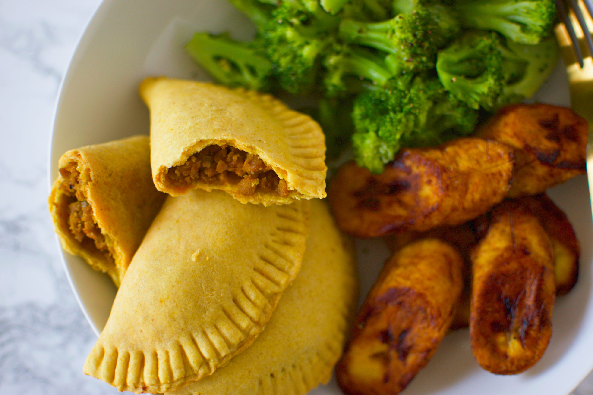

<!DOCTYPE html>
<html lang="en">
<head>
    <meta charset="UTF-8">
    <meta http-equiv="X-UA-Compatible" content="IE=edge">
    <meta name="viewport" content="width=device-width, initial-scale=1.0">
    <title>Chicken Pattties</title>
</head>
<body>
    
</body>
</html><h1> Chicken Patties</h1>


<h2 class=""> </h2>
<p> Homemade Jamaican patties recipe. This dish is one of the most famous and likeable Jamaican snacks, as it's great for on the go and has an even greater taste! Everybody loves patties! The flaky crust is delicious and is mainly filled with grounded beef mince, chicken, or saltfish filling and a variety of spices to satisfy your taste buds. When made from scratch at home, the mince have a much more fresh look to the ones in the shop, as the fillings are often processed for longevity. A bit of advice, eating it the next day always had a bit more flavour to the taste!
</p>

<div> 
    <h3> Ingriedients</h3>
      <div>
        <p>Pastry</p>
    <ul>
        <li>2 cups all-purpose flour</li>
        <li>1 teaspoon turmeric powder</li>
        <li>1/2 teaspoon curry powder</li>
        <li> 1 dash salt</li>
        <li>1/4 cup margarine</li>
        <li>1/4 cup shortening </li>
        <li>1/3 cup water </li>
    </ul>
      </div>

      <div>
        <p>Filling</p>
    <ul>
        <li>1 tablespoon olive oil</li>
        <li>4 -6 garlic cloves, finely chopped</li>
        <li>1 large onion, finely chopped</li>
        <li> 1 lb lean lean ground beef</li>
        <li>1 tablespoon curry powder</li>
        <li>1/2 teaspoon cumin powder or 1/2 teaspoon turmeric powder</li>
        <li>1 teaspoon salt</li>
        <li> 1/2 teaspoon ground black pepper</li>
        <li>1/2 cup dry breadcrumbs</li>
        <li>1/2 cup chicken stock</li>
        <li>2 green onions, finely chopped</li>
    </ul>
      </div>

</div>

<div> 
    <h4> Instructions</h4>
    <h5>Pastry</h5>
    <ol>
        <li>In a large bowl, combine flour, turmeric, curry, and salt.</li>
        <li>Cut in 1/4 cup margarine and shortening until mixture resembles coarse crumbs.</li>
        <li>Stir in water until mixture forms a ball. Shape dough into a log, and cut into 10 equal sections.</li>
        <li>  Roll each section into a six inch circle (approximately 1/8 inch thick). Cover with damp towel.</li>
        <li> Spoon equal amounts of filling into each pastry circle. Fold over making a half circle and press edges together. Use a fork to press edges, and brush the top of each patty with beaten egg.
            Cook for 25- 30 minutes. </li>
    </ol>
    <h6>Filling</h6>
    <ol>
        <li>Heat oil in skillet over medium heat.</li>
        <li> Add onions and cook for 10 minutes stirring occasionally until soft and translucent.</li>
        <li> Add garlic, cook 2 minutes.</li>
        <li>Add beef, curry, cumin, salt, and pepper.</li>
        <li>Cook until browned stirring constantly.</li>
        <li>Stir in stock and breadcrumbs.</li>
        <li>  Simmer until liquid is absorbed. (aprox.10 minutes) Texture should be soft and moist. Add green onions.</li>
    </ol>
</div>
<div>
    <p> <a href="chicken_patties.html"> Return to the top</a> </p>
</div>

<div> 
    <p> <a href="index.html"> Homepage</a></p>
</div>